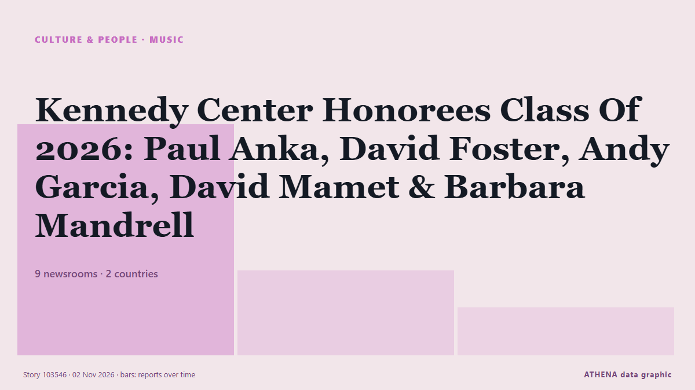

الموسيقى
برعايةبرعاية  Cybernetics and Artificial Intelligence Lab Welcome to the Cybernetics and Artificial Intelligence Laboratory, established at the Department of Business Administration of the National
Cybernetics and Artificial Intelligence Lab Welcome to the Cybernetics and Artificial Intelligence Laboratory, established at the Department of Business Administration of the National
| 20 أكتوبر | 0 |
|---|---|
| 21 أكتوبر | 0 |
| 22 أكتوبر | 0 |
| 23 أكتوبر | 1 |
| 24 أكتوبر | 0 |
| 25 أكتوبر | 0 |
| 26 أكتوبر | 0 |
| 27 أكتوبر | 0 |
| 28 أكتوبر | 1 |
| 29 أكتوبر | 1 |
| 30 أكتوبر | 3 |
| 31 أكتوبر | 3 |
| 1 نوفمبر | 0 |
| 2 نوفمبر | 4 |
تُعرض العناوين بالإنجليزية كما نُشرت.

Kennedy Center Honorees Class Of 2026: Paul Anka, David Foster, Andy Garcia, David Mamet & Barbara Mandrell
One day ahead of D.C.’s Big Day, we have the latest recipients of the annual Kennedy Center Honors. من Deadline
In Afghanistan, musicians defy music ban to keep traditions alive
Despite a music ban by the Taliban, Afghan musicians continue to play in secret, determined to preserve their cultural traditions. من Arab News
Harry Styles dresses as viral ‘pizza rat’ for final Madison Square Garden show
His band continued the theme by dressing up as New York City landmarks and references. من Evening Standard (London)
US rapper Macklemore launches 'Free Palestine Tour'
Macklemore launches his Free Palestine Tour in Dublin after Ed Sheeran drops him, drawing sold-out crowds and pro-Palestinian support. من The New Arab
Macklemore says he was unable to ‘stay silent’ about Israel-Palestine conflict
The US rapper performed at the OVO Arena Wembley on Friday night. من The Irish News (Belfast)
The unsung heroes of snake antivenom production
There are the hidden figures working behind the scenes in the music industry. من IOL
Lily Allen Dressed as an Empty Ticketmaster Map for Halloween
After scaling down her summer tour, Allen dressed up as every pop star’s nightmare: a pox of unsold tickets. من Pitchfork news
AND2BLE Sell Over Half A Million Copies In A Day With Sophomore EP
AND2BLE sold 523,970 copies of ‘Sequence 02: Attraction’ on its first day, more than tripling their debut album's first day and setting a career-best for the K-pop group. من Forbes Business